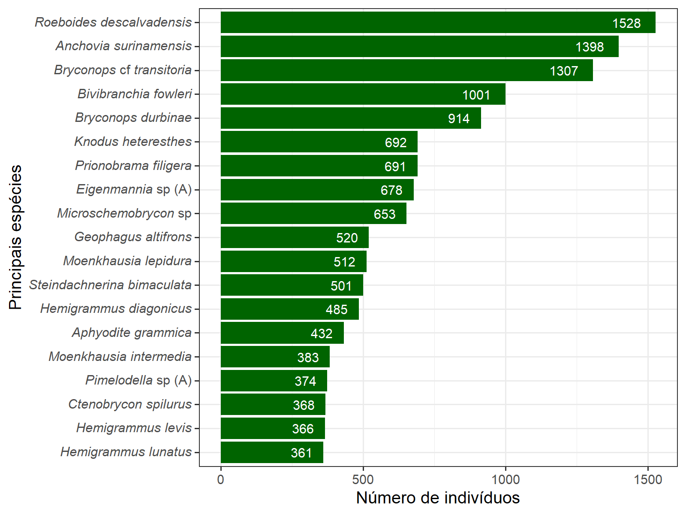

Manipulação de dados no R
Manipulação de Dados
A manipulação de dados é uma etapa fundamental em qualquer análise de dados ou projeto de ciência de dados. Refere-se ao processo de preparação e transformação de conjuntos de dados para que eles estejam em um formato adequado e contenham as informações necessárias para realizar análises estatísticas ou gerar insights valiosos. No contexto da linguagem de programação R, a manipulação de dados envolve uma série de operações que permitem a você limpar, organizar e preparar seus dados para análise.
Objetivos da Manipulação de Dados
A manipulação de dados no R visa atingir vários objetivos essenciais:
Limpeza de Dados: Isso envolve lidar com dados ausentes, duplicados e inconsistentes. A remoção de observações com dados ausentes ou a imputação de valores faltantes são etapas comuns na limpeza de dados.
Transformação de Dados: Isso inclui a conversão de tipos de dados, como datas e strings, em formatos que sejam compatíveis com as operações de análise. Também envolve a criação de novas variáveis a partir das existentes, aplicação de funções matemáticas e estatísticas, entre outras transformações.
Reestruturação de Dados: Às vezes, os dados precisam ser remodelados para se adequar a um formato específico. Isso pode envolver a transposição de tabelas, agregação de dados, ou até mesmo a separação de colunas em várias colunas ou vice-versa.
Seleção de Variáveis: Em muitos casos, os conjuntos de dados contêm uma grande quantidade de variáveis. A manipulação de dados permite que você selecione apenas as variáveis relevantes para a análise, tornando o conjunto de dados mais focado.
Agregação e Sumarização: Em análises mais avançadas, é comum agrupar dados por categorias e calcular estatísticas resumidas, como médias, medianas, desvios-padrão, entre outras. Isso é especialmente útil para explorar padrões nos dados.
Manipulando dados com o R base
Indexação de vetor e dataframe
A linguagem de programação R oferece poderosas ferramentas para manipulação de dados, e a indexação de vetores e dataframes desempenha um papel fundamental nesse processo. Essa capacidade permite acessar, modificar e explorar dados de maneira eficiente.
Indexação de Vetores:
Vetores em R são estruturas unidimensionais que podem conter elementos de diversos tipos de dados. A indexação de vetores é a técnica pela qual você acessa elementos específicos de um vetor. Em R, os índices começam em 1, diferentemente de algumas outras linguagens que começam em 0. Por exemplo:
Além disso, é possível criar subconjuntos de vetores com base em condições específicas, facilitando a extração de informações relevantes.
Para acessar um objeto usa-se [ ]
Os vetores possuem só uma dimensão
- Dados numéricos
dados_vetor <- c(1:20)
dados_vetor
[1] 1 2 3 4 5 6 7 8 9 10 11 12 13 14 15 16 17 18 19 20
dados_vetor[2] <- 3 # Substituir o segundo valor por 3
dados_vetor
[1] 1 3 3 4 5 6 7 8 9 10 11 12 13 14 15 16 17 18 19 20- Dados de texto
Indexação de Dataframes:
Dataframes são estruturas bidimensionais que podem ser vistas como tabelas, onde as colunas representam variáveis e as linhas representam observações. A indexação de dataframes em R é uma extensão da indexação de vetores, permitindo o acesso a elementos específicos em linhas e colunas.
É possível criar subconjuntos de dataframes com base em condições em uma ou mais colunas, proporcionando uma flexibilidade valiosa na manipulação de conjuntos de dados complexos.
- Dataframe possui duas dimensões
[linha ,coluna]
dados <- data.frame(
Espécies = paste0("esp", 1:12),
Periodo = as.factor(rep(c("Cheia", "Seca"), each = 6)),
Abundancia = c(24,25,22,30,55,45,38,75,58,62,64,48)
)
dados
Espécies Periodo Abundancia
1 esp1 Cheia 24
2 esp2 Cheia 25
3 esp3 Cheia 22
4 esp4 Cheia 30
5 esp5 Cheia 55
6 esp6 Cheia 45
7 esp7 Seca 38
8 esp8 Seca 75
9 esp9 Seca 58
10 esp10 Seca 62
11 esp11 Seca 64
12 esp12 Seca 48- Exemplos de acessar dados de um dataframe
# Acessar a primeira coluna
dados[1]
Espécies
1 esp1
2 esp2
3 esp3
4 esp4
5 esp5
6 esp6
7 esp7
8 esp8
9 esp9
10 esp10
11 esp11
12 esp12
# Acessar as colunas menos a 3
dados[-3]
Espécies Periodo
1 esp1 Cheia
2 esp2 Cheia
3 esp3 Cheia
4 esp4 Cheia
5 esp5 Cheia
6 esp6 Cheia
7 esp7 Seca
8 esp8 Seca
9 esp9 Seca
10 esp10 Seca
11 esp11 Seca
12 esp12 Seca
# Acessar a primeira linha
dados[1,]
Espécies Periodo Abundancia
1 esp1 Cheia 24
# Acessar a primeira linha e a primeira coluna
dados[1,1]
[1] "esp1"
# Acessar as 5 primeiras linhas
dados[1:5,]
Espécies Periodo Abundancia
1 esp1 Cheia 24
2 esp2 Cheia 25
3 esp3 Cheia 22
4 esp4 Cheia 30
5 esp5 Cheia 55Outras opções para observar um dataframe como encontrar o somatórios dos dados
Gráficos simples
É possível criar gráficos simples no R base para explorar os dados
(recursos avançados de gráficos serão tratados mais tarde)
Barplot
grafico_barra <- barplot(soma_periodo,
# Cores dos gráficos
col = c("#08bb00", "#b300bb"),
# nome dos eixos
ylab = "Abundância de espécies",
xlab = "Período",
# Largura das bordas
lwd = 2,
# Limite do eixo Y
ylim = c(0,380),
# Tamanho da fonte dos eixos
cex.lab = 1.5, cex.axis = 1.5)
# Adicionando uma linha em formato L
box(bty = "L", lwd = 2)
# Adicionando os valores nas barras
text(x= grafico_barra, y = soma_periodo+20,
labels = soma_periodo, cex = 1.5)
Importação de dados
Importando dados no R: Pacotes e Métodos
O R é uma linguagem de programação amplamente utilizada para análise de dados e estatísticas, e uma das primeiras etapas em qualquer análise de dados é a importação de dados. O R oferece diversas maneiras de importar dados de várias fontes, como arquivos CSV, Excel, bancos de dados, APIs da web e muito mais. A capacidade de importar e manipular dados é fundamental para qualquer análise estatística ou projeto de ciência de dados, e o R oferece uma ampla gama de ferramentas e pacotes que tornam essa tarefa mais eficaz e eficiente.
Pacotes para Importação de Dados
A importação de dados no R é uma parte fundamental do processo de análise de dados. O R oferece uma variedade de pacotes que simplificam esse processo, tornando-o mais acessível e eficaz. Alguns dos pacotes mais amplamente usados para importação de dados incluem:
base: O R possui um conjunto de funções base que permite a importação de dados a partir de arquivos CSV, TXT e outros formatos simples. A função
read.csv()é comumente usada para ler arquivos CSV, enquantoread.table()é usada para ler dados tabulares de texto. No entanto, essas funções têm algumas limitações em relação a formatos de dados mais complexos.readr: O pacote “readr” é parte do ecossistema do tidyverse e fornece funções aprimoradas para importação de dados. Ele é especialmente útil para ler arquivos CSV, TSV e outros formatos de dados delimitados. O
read_csv()eread_tsv()são funções populares deste pacote, que também automatizam a detecção do tipo de dados e codificação.readxl: Se você precisa importar dados de planilhas do Excel, o pacote “readxl” é uma escolha sólida. Ele fornece funções como
read_excel()para importar dados diretamente de arquivos Excel (.xls e .xlsx) e é uma alternativa eficaz às funções base do R.
Lendo dados com a função
read.csv2
Lendo dados com a função
read_excel
# Lendo dados de arquivos do excel .xls e .xlsx
dados_ictio <- read_excel("dados/dados_esp.xlsx", sheet = 1, na = "NA")
dados_ictio
# A tibble: 22,398 × 14
order family genus species river_system locality date habitat
<chr> <chr> <chr> <chr> <chr> <chr> <dttm> <chr>
1 Silur… Dorad… Trac… Trachy… Amazonas Floodpl… 2014-11-26 00:00:00 Floodp…
2 Silur… Dorad… Trac… Trachy… Amazonas Floodpl… 2014-11-26 00:00:00 Floodp…
3 Silur… Dorad… Trac… Trachy… Amazonas Floodpl… 2014-11-26 00:00:00 Floodp…
4 Silur… Dorad… Trac… Trachy… Amazonas Floodpl… 2014-11-26 00:00:00 Floodp…
5 Silur… Dorad… Trac… Trachy… Amazonas Floodpl… 2014-11-26 00:00:00 Floodp…
6 Silur… Dorad… Trac… Trachy… Amazonas Floodpl… 2014-11-26 00:00:00 Floodp…
7 Chara… Acest… Aces… Acestr… Amazonas Floodpl… 2014-11-26 00:00:00 Floodp…
8 Chara… Acest… Aces… Acestr… Amazonas Floodpl… 2014-11-26 00:00:00 Floodp…
9 Silur… Dorad… Ossa… Ossanc… Amazonas Floodpl… 2014-11-26 00:00:00 Floodp…
10 Silur… Dorad… Ossa… Ossanc… Amazonas Floodpl… 2014-11-26 00:00:00 Floodp…
# ℹ 22,388 more rows
# ℹ 6 more variables: temp <dbl>, ph <dbl>, do <dbl>, cd <dbl>, tb <dbl>,
# tp <dbl>Antes de começar a manipular os dados é bom verificar se os dados foram carregados corretamente. Existem várias formas, serão abordadas algumas.
View() Visualiza os dados em uma planilha
glimpse() Verifica o tipos dos dados
glimpse(dados_ictio)
Rows: 22,398
Columns: 14
$ order <chr> "Siluriformes", "Siluriformes", "Siluriformes", "Silurifo…
$ family <chr> "Doradidae", "Doradidae", "Doradidae", "Doradidae", "Dora…
$ genus <chr> "Trachydoras", "Trachydoras", "Trachydoras", "Trachydoras…
$ species <chr> "Trachydoras nattereri", "Trachydoras nattereri", "Trachy…
$ river_system <chr> "Amazonas", "Amazonas", "Amazonas", "Amazonas", "Amazonas…
$ locality <chr> "Floodplain lake at Pajau; on the south margin of the mai…
$ date <dttm> 2014-11-26, 2014-11-26, 2014-11-26, 2014-11-26, 2014-11-…
$ habitat <chr> "Floodplain lake", "Floodplain lake", "Floodplain lake", …
$ temp <dbl> 30.1, 30.1, 30.1, 30.1, 30.1, 30.1, 30.1, 30.1, 30.1, 30.…
$ ph <dbl> 6.94, 6.94, 6.94, 6.94, 6.94, 6.94, 6.94, 6.94, 6.94, 6.9…
$ do <dbl> 4.7, 4.7, 4.7, 4.7, 4.7, 4.7, 4.7, 4.7, 4.7, 4.7, 4.7, 4.…
$ cd <dbl> 78.1, 78.1, 78.1, 78.1, 78.1, 78.1, 78.1, 78.1, 78.1, 78.…
$ tb <dbl> 169, 169, 169, 169, 169, 169, 169, 169, 169, 169, 169, 16…
$ tp <dbl> 0.2, 0.2, 0.2, 0.2, 0.2, 0.2, 0.2, 0.2, 0.2, 0.2, 0.2, 0.…class() Verifica a classe do objeto
dim() Verifica as dimensões do objeto
head()Carrega os primeiros dados
head(dados_ictio)
# A tibble: 6 × 14
order family genus species river_system locality date habitat
<chr> <chr> <chr> <chr> <chr> <chr> <dttm> <chr>
1 Siluri… Dorad… Trac… Trachy… Amazonas Floodpl… 2014-11-26 00:00:00 Floodp…
2 Siluri… Dorad… Trac… Trachy… Amazonas Floodpl… 2014-11-26 00:00:00 Floodp…
3 Siluri… Dorad… Trac… Trachy… Amazonas Floodpl… 2014-11-26 00:00:00 Floodp…
4 Siluri… Dorad… Trac… Trachy… Amazonas Floodpl… 2014-11-26 00:00:00 Floodp…
5 Siluri… Dorad… Trac… Trachy… Amazonas Floodpl… 2014-11-26 00:00:00 Floodp…
6 Siluri… Dorad… Trac… Trachy… Amazonas Floodpl… 2014-11-26 00:00:00 Floodp…
# ℹ 6 more variables: temp <dbl>, ph <dbl>, do <dbl>, cd <dbl>, tb <dbl>,
# tp <dbl>tail()Carrega os últimos dados
tail(dados_ictio)
# A tibble: 6 × 14
order family genus species river_system locality date habitat
<chr> <chr> <chr> <chr> <chr> <chr> <dttm> <chr>
1 Charac… Hemio… Bivi… Bivibr… Tapajos rio Tap… 2015-02-15 00:00:00 River …
2 Percif… Sciae… Pach… Pachyp… Tapajos rio Tap… 2014-10-16 00:00:00 River …
3 Percif… Sciae… Pach… Pachyp… Tapajos rio Tap… 2014-10-16 00:00:00 River …
4 Myliob… Potam… Pota… Potamo… Tapajos rio Tap… 2014-10-16 00:00:00 River …
5 Charac… Iguan… Bryc… Brycon… Tapajos rio Tap… 2015-02-15 00:00:00 River …
6 Charac… Iguan… Bryc… Brycon… Tapajos rio Tap… 2015-02-15 00:00:00 River …
# ℹ 6 more variables: temp <dbl>, ph <dbl>, do <dbl>, cd <dbl>, tb <dbl>,
# tp <dbl>Operador Pipe
O operador Pipe (%>%) é uma das funcionalidades mais
poderosas e úteis na linguagem de programação R. Introduzido pelo pacote
magrittr e amplamente adotado em muitos outros pacotes, o
operador Pipe torna o código mais legível, eficiente e expressivo. Ele é
especialmente útil quando se trabalha com manipulação de dados, análise
estatística e visualização de dados.
O operador Pipe permite encadear várias operações de maneira lógica, da esquerda para a direita, em um pipeline de processamento de dados. Isso significa que o resultado de uma operação é passado diretamente para a próxima operação, evitando a necessidade de criar variáveis intermediárias ou atribuições temporárias. Isso torna o código mais conciso e fácil de entender.
O operador Pipe pode ser lido: E ENTÃO
Vamos ver um exemplo simples de como o operador Pipe funciona:
# Sem o operador Pipe
resultado <- mean(sqrt(log(1:10)))
# Com o operador Pipe
resultado <-
1:10 %>%
log() %>%
sqrt() %>%
mean()No exemplo acima, o operador Pipe permite que você leia o código de maneira mais natural, seguindo o fluxo de processamento dos dados da esquerda para a direita. Além disso, ele evita a necessidade de criar variáveis intermediárias para armazenar os resultados parciais de cada operação.
O operador Pipe é particularmente útil ao trabalhar com pacotes como
dplyr e ggplot2, que são amplamente utilizados
na análise de dados e visualização. Por exemplo, ao usar o
dplyr para manipular um conjunto de dados, você pode
encadear operações como filtrar, agrupar e resumir os dados de forma
limpa e eficiente usando o operador Pipe.
Operador Pipe nativo
O operador Pipe nativo da linguagem R foi introduzido na versão
4.1.0, que foi lançada após o meu último treinamento em janeiro de 2022.
O operador Pipe nativo, representado por |>, foi
adicionado para melhorar a legibilidade e a eficiência do código,
permitindo a execução de operações em sequência de forma mais
direta.
O operador Pipe nativo funciona de maneira semelhante ao operador
Pipe do pacote magrittr, mas ele é integrado diretamente na
linguagem R. Ele encadeia as operações de esquerda para a direita,
passando o resultado de uma operação como o primeiro argumento da
próxima. Isso facilita a leitura do código e a compreensão do fluxo de
dados. Aqui está um exemplo de como o operador Pipe nativo funciona:
# Sem o operador Pipe
resultado <- mean(sqrt(log(1:10)))
# Com o operador Pipe nativo
resultado <-
1:10 |>
log() |>
sqrt() |>
mean()Neste exemplo, o operador Pipe nativo é usado para encadear as operações de log, raiz quadrada e cálculo da média de uma maneira mais clara e concisa.
O operador Pipe nativo é uma adição bem-vinda à linguagem R, pois
simplifica o código, tornando-o mais legível e reduzindo a necessidade
de criar variáveis intermediárias. Ele é particularmente útil em tarefas
de manipulação de dados, análise estatística e visualização, tornando o
processo de análise de dados mais eficiente e expressivo. Certifique-se
de estar usando uma versão do R que inclui o operador Pipe nativo, caso
contrário, você precisará continuar a usar a abordagem com o operador
Pipe do pacote magrittr.
Manipulando dados com o dplyr
O pacote dplyr é uma ferramenta poderosa projetada para
tornar essa tarefa mais intuitiva e eficaz. Desenvolvido por Hadley
Wickham, o dplyr oferece uma série de funções simples e
consistentes para realizar operações comuns de manipulação de dados,
como filtragem, seleção, agrupamento, ordenação e resumo.
Ao adotar uma sintaxe clara e coerente, o dplyr permite
que os usuários expressem suas intenções de maneira mais legível e
concisa, tornando o código mais eficiente e fácil de entender. Uma
característica marcante do dplyr é o uso do operador Pipe
(%>%), que permite encadear operações de maneira lógica,
promovendo um fluxo de código mais natural da esquerda para a
direita.
Seja para explorar dados, realizar análises descritivas ou preparar
dados para modelagem estatística, o dplyr simplifica muitas
tarefas comuns, proporcionando uma experiência mais agradável e
produtiva para os usuários de R. Nesta introdução, exploraremos algumas
das principais funcionalidades do dplyr e como elas podem
ser aplicadas para otimizar a manipulação de conjuntos de dados em
R.
filter()
A função filter() do pacote dplyr
desempenha um papel central na manipulação de dados em R, permitindo que
os usuários filtrem linhas de um conjunto de dados com base em condições
específicas..
dados_ictio |>
filter(river_system == "Amazonas")
# A tibble: 9,876 × 14
order family genus species river_system locality date habitat
<chr> <chr> <chr> <chr> <chr> <chr> <dttm> <chr>
1 Silur… Dorad… Trac… Trachy… Amazonas Floodpl… 2014-11-26 00:00:00 Floodp…
2 Silur… Dorad… Trac… Trachy… Amazonas Floodpl… 2014-11-26 00:00:00 Floodp…
3 Silur… Dorad… Trac… Trachy… Amazonas Floodpl… 2014-11-26 00:00:00 Floodp…
4 Silur… Dorad… Trac… Trachy… Amazonas Floodpl… 2014-11-26 00:00:00 Floodp…
5 Silur… Dorad… Trac… Trachy… Amazonas Floodpl… 2014-11-26 00:00:00 Floodp…
6 Silur… Dorad… Trac… Trachy… Amazonas Floodpl… 2014-11-26 00:00:00 Floodp…
7 Chara… Acest… Aces… Acestr… Amazonas Floodpl… 2014-11-26 00:00:00 Floodp…
8 Chara… Acest… Aces… Acestr… Amazonas Floodpl… 2014-11-26 00:00:00 Floodp…
9 Silur… Dorad… Ossa… Ossanc… Amazonas Floodpl… 2014-11-26 00:00:00 Floodp…
10 Silur… Dorad… Ossa… Ossanc… Amazonas Floodpl… 2014-11-26 00:00:00 Floodp…
# ℹ 9,866 more rows
# ℹ 6 more variables: temp <dbl>, ph <dbl>, do <dbl>, cd <dbl>, tb <dbl>,
# tp <dbl>group_by() e
summarise()
A função group_by() é utilizada para
agrupar dados com base em uma ou mais variáveis. Essa função é
frequentemente usada em conjunto com outras funções do
dplyr, como
summarise(), permitindo análises
agrupadas.
A função summarise() é usada para
resumir os dados dentro de grupos.
select() e count()
A função select() é empregada para
escolher colunas específicas de um conjunto de dados, tornando mais
fácil trabalhar com um subconjunto relevante de variáveis.
A função count() simplifica a contagem
de observações em cada grupo. É especialmente útil quando você deseja
contar a frequência de valores em uma variável categórica.
dados_ictio |>
group_by(river_system) |>
select(species) |>
count()
Adding missing grouping variables: `river_system`
# A tibble: 3 × 2
# Groups: river_system [3]
river_system n
<chr> <int>
1 Amazonas 9876
2 Arapiuns 6617
3 Tapajos 5905arrange()
A função arrange() ordena as linhas de
um conjunto de dados com base em uma ou mais colunas. É útil para
organizar os dados de acordo com critérios específicos.
mutate()
A função mutate() é usada para criar
novas variáveis ou transformar as existentes. Ela permite adicionar
colunas com base em operações em colunas existentes.
Todo o
conteúdo está disponível sob a licença CC BY-NC-SA 4.0